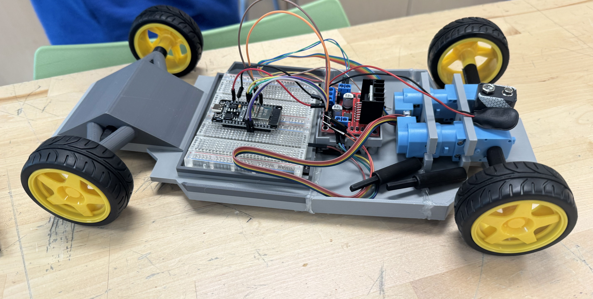

High school project / 01
High School Senior Capstone
With a partner, I attempted to create a remotely controlled vehicle as a prototype for an RC car. My partner did most of the CAD work, while I primarily worked on the code using C++ in the Arduino IDE.
Through this project, I learned about work allocation and the efficiency of splitting responsibilities. The problems we encountered also taught me the importance of backing up work and the intricacies of 3D printing.
Links: Demo or source code to be added when available.